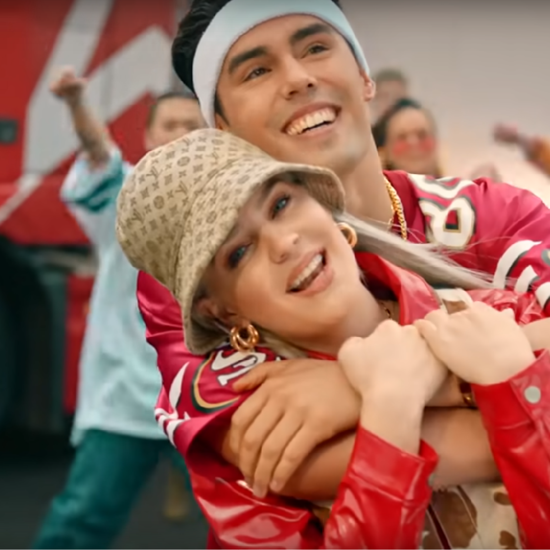
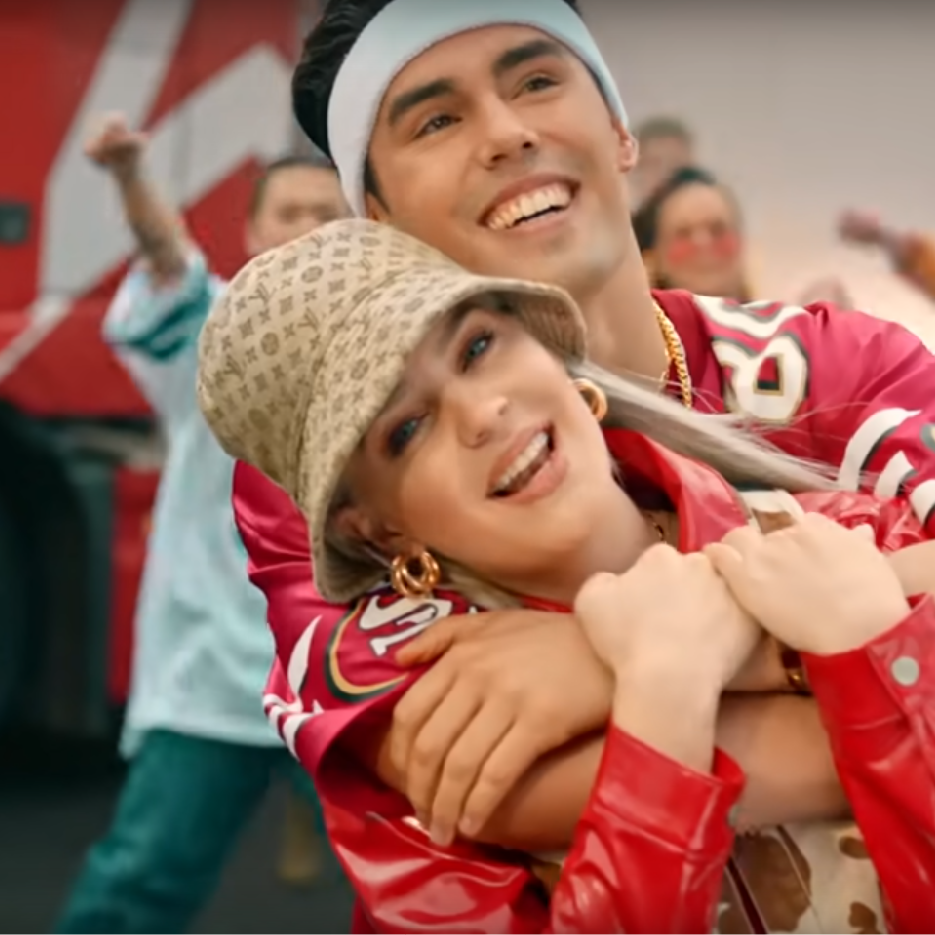
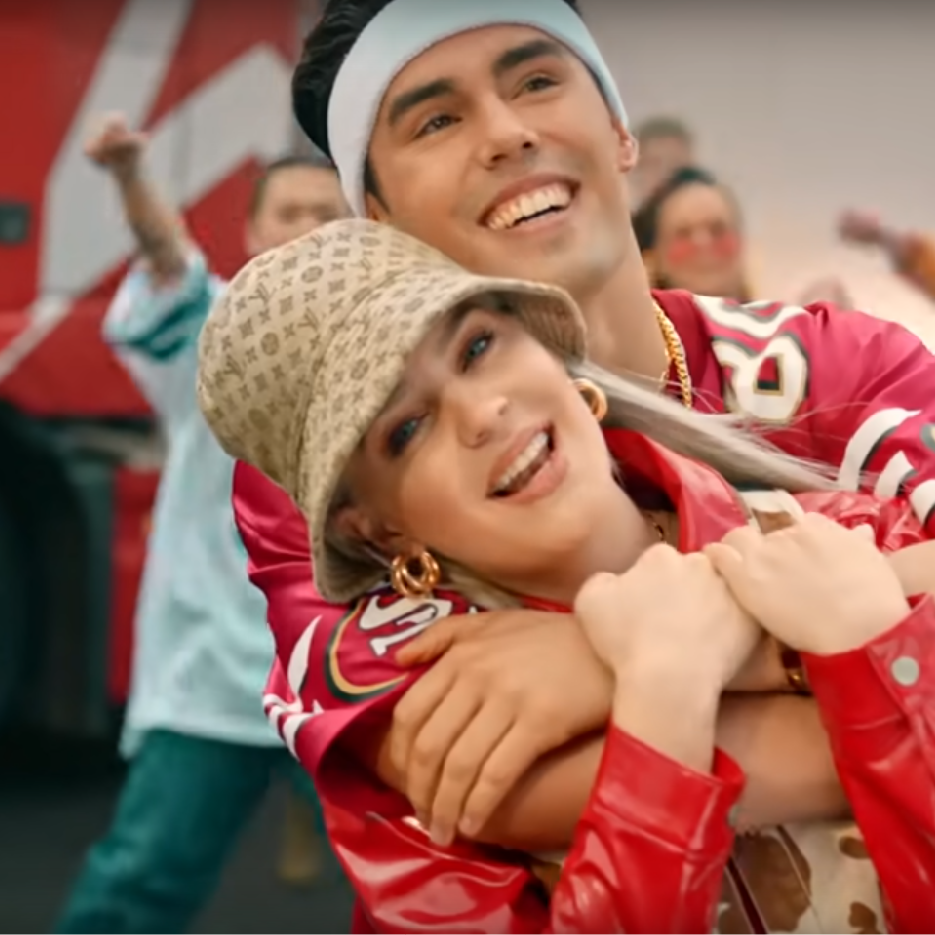

이번 페이지는 2002 뮤직비디오에 나오는 장면들을 모은 갤러리 페이지다.
앤 마리(Anne-Marie)의 2002 뮤직 비디오를 여러번 보았는데 보면서 항상 밝은 에너지를 느꼈던 것 같다.
가사만 봐도 왠지 설레고 내가 직접 겪었던 일들인 것처럼 다가왔는데 뮤비를 보면 더더욱 그런 느낌이 강해졌다.
그래서 내가 직접 뮤직비디오를 보면서 예쁘다고 생각한, 인상깊었던 장면들을 뽑아보았다.
뮤직 비디오의 예쁜 감성을 함께 느껴보자!
